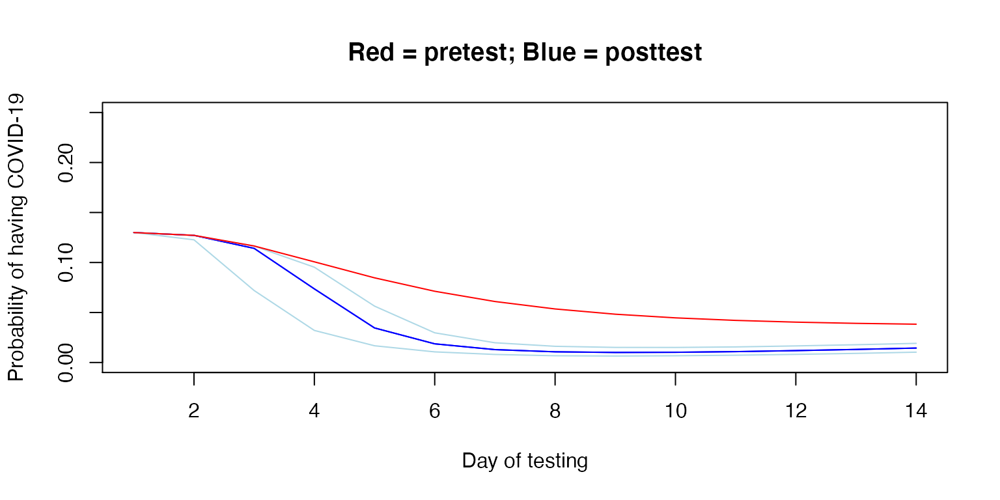

Probability of Undetected COVID-19 on a Unit
unit-example.Rmd
library(covidprobability)Background
Pre-test probability
The pre-test probability of a COVID-19 infection can be inferred from what is known about SARS-CoV-2 transmission, from the nature of a given exposure, and from empirical data about attack rates in different settings and ages. If someone who is exposed does not develop symptoms, the pre-test probability will drop over time, based on the incubation period of COVID-19. That is, if someone has not developed symptoms by 14 days, the probability of having COVID-19 is very low, in line with World Health Organization guidelines for contacts of cases to quarantine for 14 days.[@worldhealthorganizationConsiderations2020]
A complicating factor is that a certain proportion of COVID-19 cases are always asymptomatic, that is they don’t develop symptoms despite infection and may be contagious. Thus when incubation period is defined as the time from exposure to symptom onset, this group is not captured. The lack of emergence of symptoms in this group does not inform pre-test probability in a similarly predictable way.
The pre-test probability can therefore be determined by reducing the probability by the proportion of patients who would be expected to have had symptoms by a given time but did not.
Testing for COVID-19
Polymerase chain reaction (PCR) is the gold standard diagnostic test for COVID-19 and the most widely available at this time. While the specificity of the test is excellent, approaching 100%, it is less sensitive than it is specific. Thus, a negative test does not rule out the presence of COVID-19 with certainty. Further, the sensitivity of PCR varies by time from exposure, which reflects the changing viral load [@kucirkaVariation2020].
Presence of COVID-19 on the unit
To identify the congregate setting following a suspected exposure event, several assumptions and determinations must be made
- Estimate the pre-test probability for each exposure
- Assume the exposure events are independent
- Determine the date of the exposure (or last possible date) to set as
Day 0.
Empirical data are required:
- What is the sensitivity and specificity of the test available, by day since exposure?
- What is the distribution of the incubation period (for symptomatic cases) in the target population?
- What proportion of cases are asymptomatic in the target population?
Methods
Pre-test probability
The initial pre-test probability (at Day 0) of each exposed resident following exposure or possible exposure is specified by the investigator. The initial pre-test probability is the expected probability the individual will develop COVID-19.
Here, we are not considering the scenario where a resident’s pre-test probability increases due to the presence of symptoms. The goal of this tool is to aid the decision of when to test and when to ease restrictions if all exposed remain asymptomatic and no cases are detected.
The incubation period of COVID-19 has been modeled by several groups and a meta-analysis pooled 8 studies to estimate a lognormal distribution of the incubation period [@mcaloonIncubation2020] with mu 1.63 (1.51, 1.75), sigma 0.5 (0.45-0.55).
plot(0:21, dlnorm(0:21, 1.63, 0.5),
xlab="Days after exposure",
ylab="Probability",
main="Incubation period",
type = "b")First ignoring asymptomatic individuals, we can calculate the daily pre-test probability for those who do not develop symptoms.
plot(0:21, plnorm(0:21, 1.63, 0.5),
ylab="Proportion",
xlab = "Days since exposure",
main="Infected expected to have developed symptoms",
type="b")The proportion of cases that are asymptomatic will vary depending on patient population. Further, the empirical data may be limited by undetected cases in ecological studies. With respect to nursing home residents, a meta-analysis found that 27.9% remained asymptomatic through follow up [@yanes-laneProportion2020].
plot(0:14, sapply(0:14, prop_remaining, asympt = 0.279, mu = 1.63, sigma = 0.5),
ylab="Proportion remaining", xlab = "Day", ylim = c(0,1), type = "b")
With each passing day, if no one develops symptoms, even without testing, the pretest probability is lowered in proportion to the number of people who would have been expected to develop symptoms by that time.
plot(0:14, adjust_pretest(pre0 = 0.13, asymp = 0.279, days = 0:14),
ylab="Pre-test probability", xlab="Day", type = "b", ylim = c(0, 0.2))
Sensitivity
To account for the changing sensitivity of the PCR COVID-19 test, we used the PCR sensitivity values from a model derived from empirical data in a meta-analysis [@kucirkaVariation2020], as reported at [https://github.com/HopkinsIDD/covidRTPCR].
plot(sens$point, ylim=c(0,1),
main="PCR Sensitivity with 95% CI",
xlab="Days since exposure", ylab="Sensitivity",
type="l");
lines(sens$lower, col="grey")
lines(sens$upper, col="grey")
Post-test Probability
Post-test probability can be calculated from the estimated pre-test probability and the sensitivity and specificity of the test. Here, we assume a 100% specificity, and use the day-by-day sensitivity plotted above to calculate the post-test probability if testing occurred on each day, to determine the optimal day to test.
Below, we demonstrate the post-test probabilities on an example person with a 13% pretest probability at exposure and assuming 27.9% of patients in this setting remain asymptomatic.
example <- posttest_series(pre0 = 0.13, asympt = 0.279,
sens = sens$point, spec = 1)
example_upper <- posttest_series(pre0 = 0.13, asympt = 0.279, sens = sens$upper,
spec = 1)
example_lower <- posttest_series(pre0 = 0.13, asympt = 0.279, sens = sens$lower,
spec = 1)
plot(example$x, example$y,
xlab="Day of testing",
ylab="Probability of having COVID-19",
main="Red = pre-test; Blue = post-test",
ylim=c(0, 0.25), col="blue", type="l")
lines(example$x, example$y,
col="blue", type="l")
lines(example_lower$x, example_lower$y,
col="lightblue", type="l")
lines(example_upper$x, example_upper$y,
col="lightblue", type="l")
lines(0:14, adjust_pretest(0.13, asympt = 0.279),
col="red", type="l")
Unit-wide post-test Probability
The relevant risk in deciding whether to maintain heightened precautions on a unit is the probability that any person is infected, or alternatively, the complement of the probability that no person is infected. That is, the probability of any case being present, is 1 less the additive probability of each case not being present.
Below, we determine the post-test probability of any person having undetected COVID-19 by day, if all people were tested on the same day. Note again that the x-axis reflects the date of testing.
unit_size <- 4
any_example <- probability_any(unit_size, example$y)
any_example_upper <- probability_any(unit_size, example_upper$y)
any_example_lower <- probability_any(unit_size, example_lower$y)
plot(example$x, any_example,
xlab="Day of testing",
ylab="Probability of any person having COVID-19",
ylim=c(0, 0.50), col="blue", type="l")
lines(example_lower$x, any_example_lower,
col="lightblue", type="l")
lines(example_upper$x, any_example_upper,
col="lightblue", type="l")
abline(v=example$x[example[,2]==min(example$y)])
In the above example, testing on day 9 yields the lowest overall post-test probability; it is the minimum. If we specify the date of testing, we can calculate and plot the change in estimated probability over time, with dates prior to testing reflecting pre-test probability on that day and dates after testing reflecting post-test probability, again assuming no one develops symptoms.
test <- individual_probability(test_day = 9, pre0 = 0.13, sens = sens, spec = 1,
asymp = 0.279, days = 0:14, mu = 1.63, sigma = 0.5)
plot(1:14, test$point, type="l", ylim=c(0,0.3),
main = "Individual probabiltiy of undetected COVID-19",
xlab = "Days since exposure",
ylab = "Probability")
lines(test$lower, type="l", col="grey")
lines(test$upper, type="l", col="grey")
Now, using the above example, we assume there were 10 exposures and calculate the unit-wide probability of an undetected COVID-19 infection over time, again assuming all were tested on day 9.
test_n <- unit_probability(test_day = 9, pre0 = 0.13, sens = sens, spec = 1,
asympt = 0.279, days = 0:14, mu = 1.63, sigma = 0.5, n = 10)
plot(1:14, test_n$point, type="b", ylim=c(0,1),
main = "Unit-wide probabiltiy of undetected COVID-19",
xlab = "Days since exposures",
ylab = "Probability")
lines(test_n$lower, type="l", col="grey")
lines(test_n$upper, type="l", col="grey")
abline(v = 9)
text(1:14, (test_n$point + 0.1), round(test_n$point, 2), cex = 1)
In this example, testing on day 9 reveals a unit-wide post-test probability of 11% on day 9 and 10% when testing on day 9 and waiting until day 14. Using the lower 95% confidence interval for test sensitivity, a conservative approach, and testing on day 9, the unit-wide estimate is 16% on day 9 and 14% on day 14.
test_n$point[9]
#> [1] 0.106424
test_n$point[14]
#> [1] 0.09516177
test_n$lower[9]
#> [1] 0.1558517
test_n$lower[14]
#> [1] 0.1397402